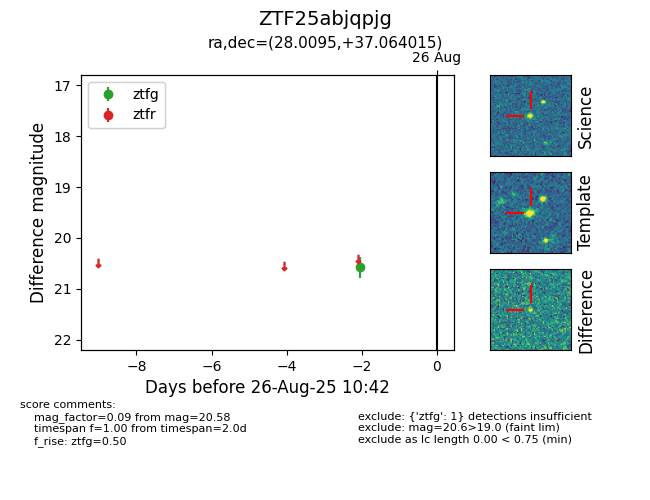

Target ZTF25abjqpjg at 2025-08-26 10:53, see:
FINK: fink-portal.org/ZTF25abjqpjg
Lasair: lasair-ztf.lsst.ac.uk/objects/ZTF25abjqpjg
ALeRCE: alerce.online/object/ZTF25abjqpjg
alt names
ZTF25abjqpjg (ztf,fink)
coordinates:
equatorial (ra, dec) = (28.0095,+37.06401)
galactic (l, b) = (136.1538,-24.24695)
photometry
last ztfg=20.58
1 ztfg detections
